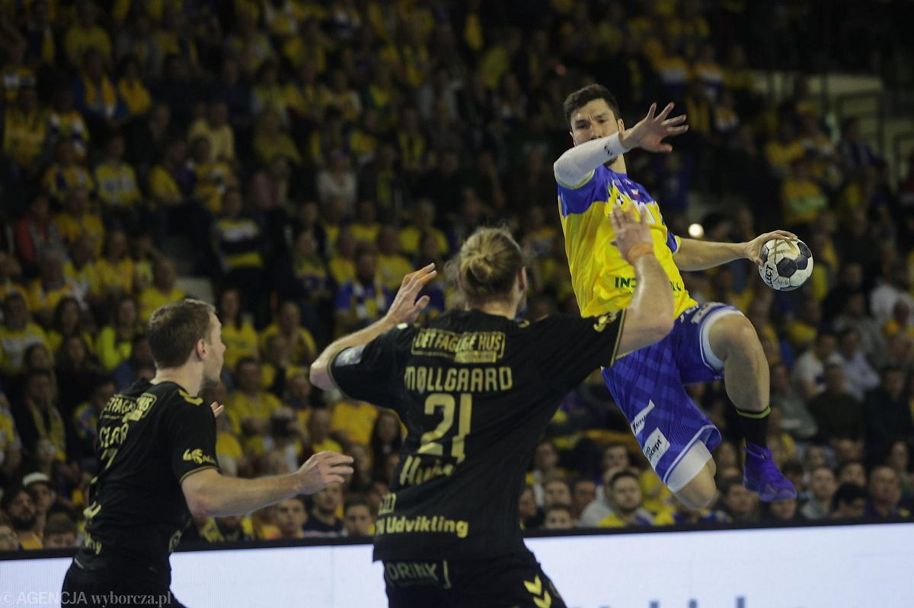

Od początku życia uprawialem sport. Zaczynałem od basenu w przedszkolu, który towarzyszy mi do teraz. Później zaczałem trenować judo, które trenowałem przez około w lata. Zrezygnowalem z judo, ponieważ miałem jeszcze słaby charakter do sportów walki oraz problemy z wiotkością stawów. Rozpoczałem, więc swoją przygodę z piłką nozną, która towarzyszyła mi do 8 klasy, kiedy przestałem w nią grać. Z piłką ręczna zacząłem w 4 klasie, kiedy w mojej szkole powstał projekt klasy usportowionej, gdzie dla chłopców profilem była właśnie piłka ręczna. Jest to mało popularny sport, więc opiszę go w paru akapitach.
Piłka ręczna to dynamiczna dyscyplina sportu, która cieszy się ogromną popularnością na całym świecie. Gra ta jest znana również jako handball i jest rozgrywana zarówno na poziomie amatorskim, jak i profesjonalnym.
Piłka ręczna to zespołowa gra sportowa, w której dwie drużyny rywalizują ze sobą, starając się zdobyć jak najwięcej bramek, rzucając piłkę do bramki przeciwnika. Każda drużyna składa się z siedmiu zawodników na boisku, w tym bramkarza. Podstawowym celem gry jest zdobycie większej liczby bramek niż przeciwnik w określonym czasie. Boisko do piłki ręcznej ma wymiary 40x20 metrów i jest podzielone na dwie połowy, z linią bramkową na każdym końcu.
Zawodnicy mogą poruszać się po boisku, trzymając piłkę w ręku i próbując znaleźć wolnego gracza lub wykorzystać sytuacje do oddania celnego rzutu na bramkę. Piłka ręczna jest dynamicznym sportem, w którym tempo gry może być bardzo szybkie, co wymaga zarówno kondycji fizycznej, jak i umiejętności taktycznych. Rzuty wolne i rzuty siedmiometrowe są częstymi elementami gry w piłkę ręczną. Bramkarz ma kluczową rolę w obronie swojej bramki, próbując zatrzymać strzały przeciwnika. Zawodnicy muszą również stosować różne taktyki, takie jak pressing, blokowanie przeciwnika i szybkie kontrataki.
Piłka ręczna jest sportem o długiej historii, a jej korzenie sięgają XIX wieku. Obecnie jest rozgrywana na różnych poziomach, od szkółki sportowej po profesjonalne ligi i międzynarodowe turnieje, takie jak Mistrzostwa Świata i Mistrzostwa Europy. Rozgrywki te przyciągają wielu kibiców, a zawodnicy piłki ręcznej są uznawani za elitarne sportowe osobowości. Piłka ręczna wymaga od zawodników sprzętu sportowego, takiego jak specjalne buty i rękawice bramkarskie, a także wytrwałego treningu w celu doskonalenia umiejętności. To sport, który promuje współpracę zespołową, kondycję fizyczną i zdyscyplinowanie. Dzięki swojej widowiskowości i emocjonującym rozgrywkom, piłka ręczna pozostaje jedną z najpopularniejszych dyscyplin sportowych na całym świecie.
Istnieją również 2 polskie drużyny z wielkimi osiągnięciami na poziomie europejskim i światowym. Jest to Wisła Płock (nie lubimy) (strona Płocka) i Industria Kielce (strona Kielc). Kielce w 2016 roku wygrały ligę mistrzów, czyli największy europejski turniej.
